让教师 AI
从“会回答”走到“能完成”
教师 AI 教学搭档产品、业务场景与工程验证阶段性汇报
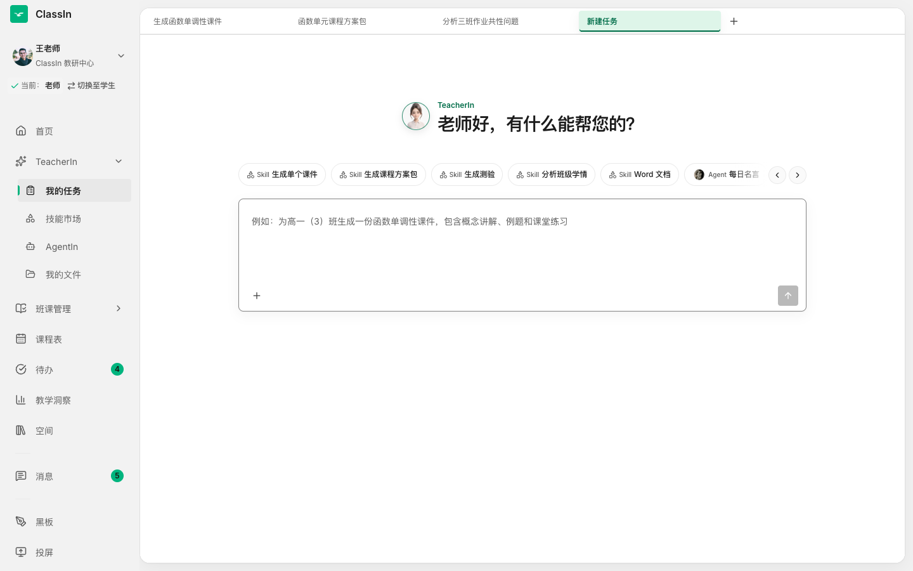
从全局盘点，到下一步实施
两种终局形态，
一个阶段性 MVP
先统一终局与阶段落地的定位关系，再看具体功能。
终局包含站内、站外两部分；MVP 是阶段性落地
ClassIn 教师 TeacherIn 工作台
面向 ClassIn 客户与老师，拥有已授权的完整 ClassIn 业务 Context，承接全部教学任务。
独立老师 AI 教学搭档
面向非 ClassIn 客户与新教师；没有 ClassIn Context，仍能依靠对话和上传资料完成独立业务闭环。
产品体验与 AI 能力沿同一条可审查链路运行
能力从“理解”到“创作”，再逐层深入到“执行”
理解与洞察
从业务信息中提取、解释、归纳，形成摘要、诊断和报告。
生成与创作
生成可审阅、可修改、可复用的课程与沟通内容。
执行与闭环
老师批准后，写入业务系统或分发到真实业务场景。
能力逐层深入：先理解业务，再生成内容，最后在老师批准后执行；权限、证据与人工审批贯穿三层。
站内终局：ClassIn
教师 TeacherIn 工作台
一个老师、一位 TeacherIn，利用完整 ClassIn Context 承接全部教学任务。
老师只描述教学目标，不需要选择 Agent、模型或工作流
从教学目标出发，不让老师理解内部 AI 组件。
组织、班级、课程和单元范围在执行前明确。
技能、工具、文件和任务历史在同一工作台沉淀。
从一句目标，生成可检查、可修改的教学产物
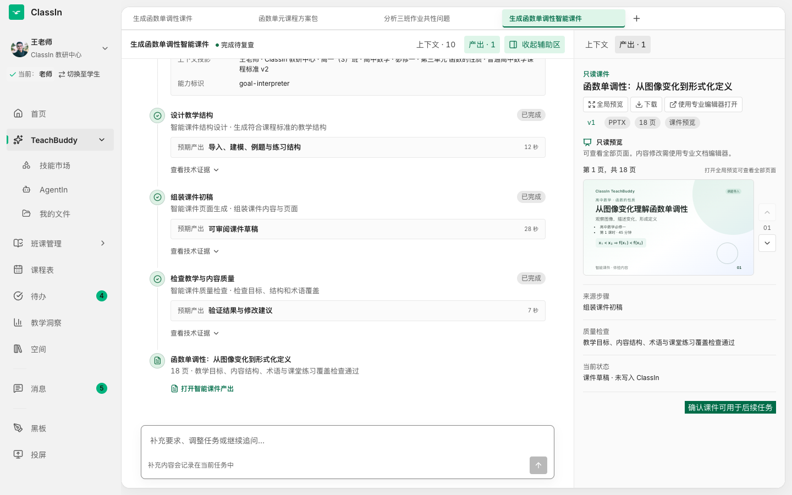
任务步骤、质量检查与恢复状态在主时间线中呈现。
右侧保留来源、版本、预览和下一步确认。
同一骨架已覆盖
单课件、课程方案包、班级学情分析等不同任务。
不止生成试卷，还能把它变成课程里的“测验草稿”
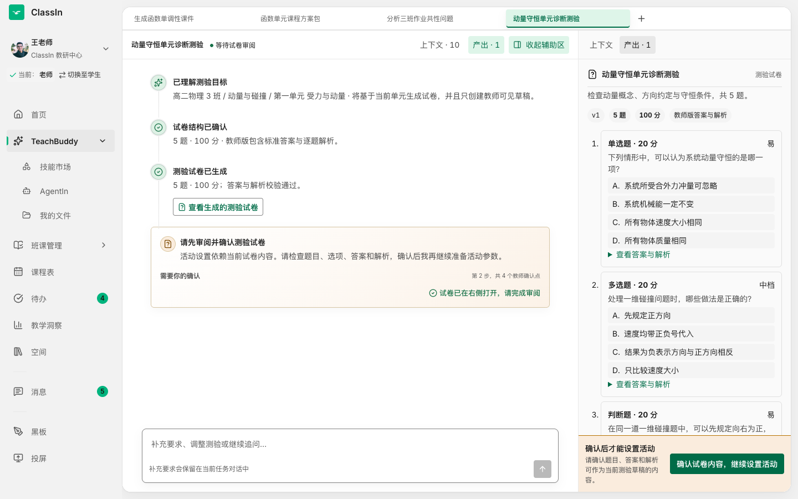
题目、选项、答案、解析、分值和难度均可审阅。
确认内容后，才进入活动参数设置。
写入课程后仍需老师在班级详情二次编辑并正式发布。
TeacherIn 产物进入同一套课程生产与分发链路
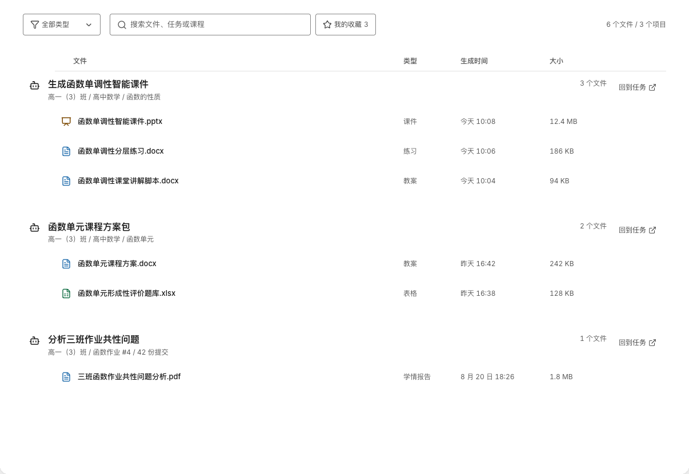
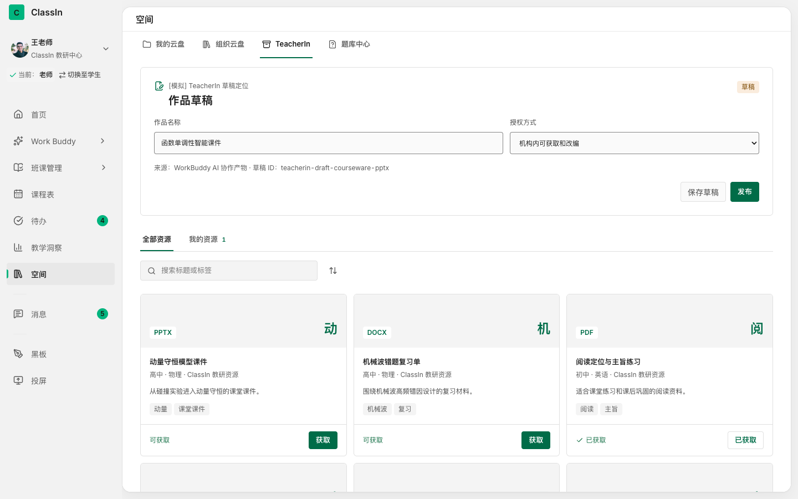
站外终局：开放式
教师 AI 教学平台
没有 ClassIn Context，也能独立完成教师任务、内容生产与商业闭环。
一个不依赖 ClassIn 账号，也能完成首次价值闭环的教师工作台
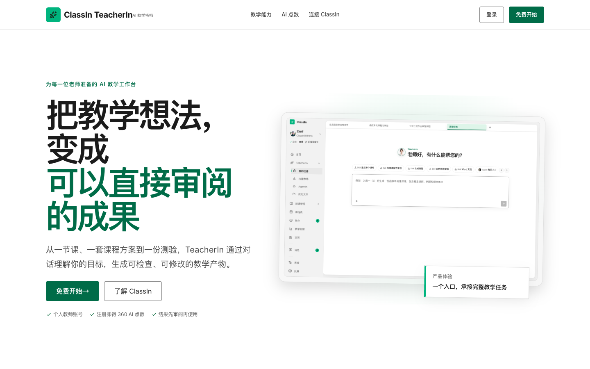
把教学想法变成可直接审阅的成果。
教师个人账号，不挂载 ClassIn 内部身份与 Provider。
可依赖任务描述和上传资料；连接 ClassIn 后再获得业务增量。
从首次体验，到持续使用，再到 ClassIn 转化
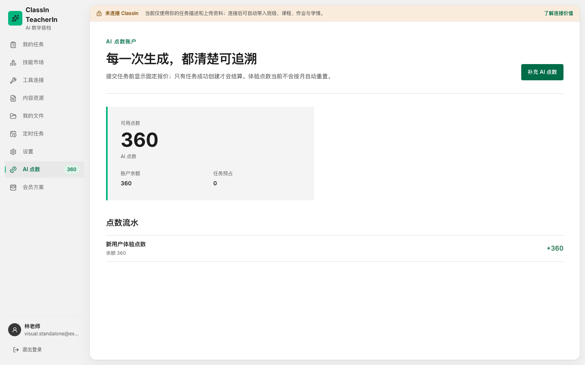
首期已经模拟完整体验
- 任务提交前显示固定点数报价
- 成功才结算，失败释放预占
- 点数流水可追溯、重复执行幂等
- 会员下单与点数到账形成体验闭环
当前为体验验证：不接真实支付、真实模型计费或生产会员权益。
产品运行彼此隔离，但内容从出生起就与 TeacherIn 兼容
Standalone TeacherIn
- 独立个人账号与权限
- 独立 Workspace、历史和存储
- 独立内容生产、管理与个人分发
统一内容契约
同一领域校验
ClassIn / TeacherIn
- 组织身份与内部权限
- 编辑、授权、发布和分发生态
- 连接后建立新对象与受控回执
未来连接处理的是身份、权限和对象映射，不需要重新制作或转换内容。
从终局设计出发，
在班级与 IM 场景先落地
这是下一阶段准备实施的产品范围：聚焦最高价值、最接近业务现场的首期能力。
TeacherIn 与班级 Agent 分工明确
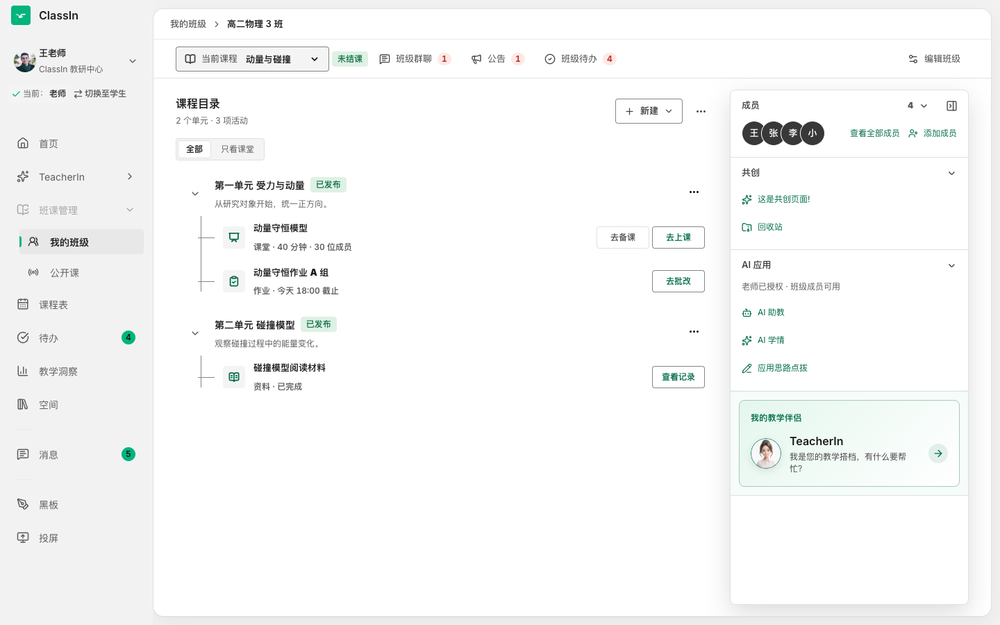
老师专属的一对一 TeacherIn；整个卡片可点击进入独立全屏工作台。
老师授权给班级、班级成员共同可用的 Agent 列表。
从哪个班级、课程和单元进入，启动时优先带入对应范围。
点击入口后，进入独立全屏 TeacherIn 工作台
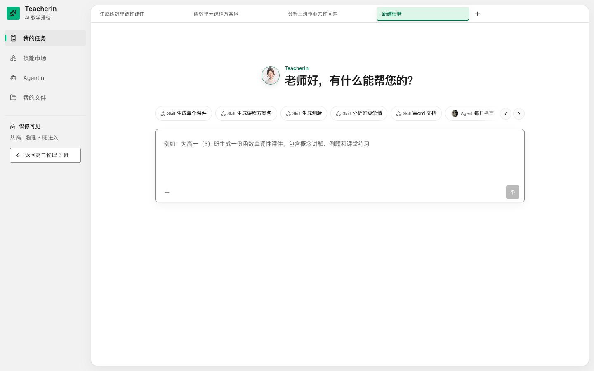
展示 MVP 自己的任务历史与能力导航，不回到终局一级导航。
老师只描述教学目标，系统在同一页面承接生成、审阅和后续执行。
优先带入当前班级，具体课程、单元和教学范围仍由老师确认。
关闭工作台后回到进入时的班级详情，不跳转到终局 TeacherIn。
老师既能管理班级 AI 应用，也能在会话中明确选择 Agent
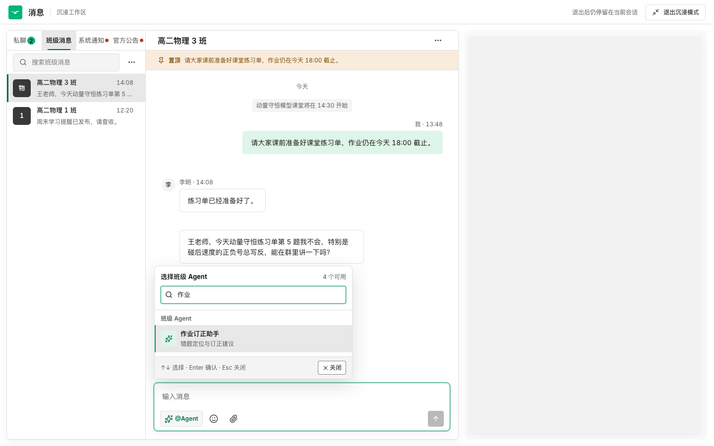
学生只看到本班已授权 Agent，并按群聊或私聊场景进入
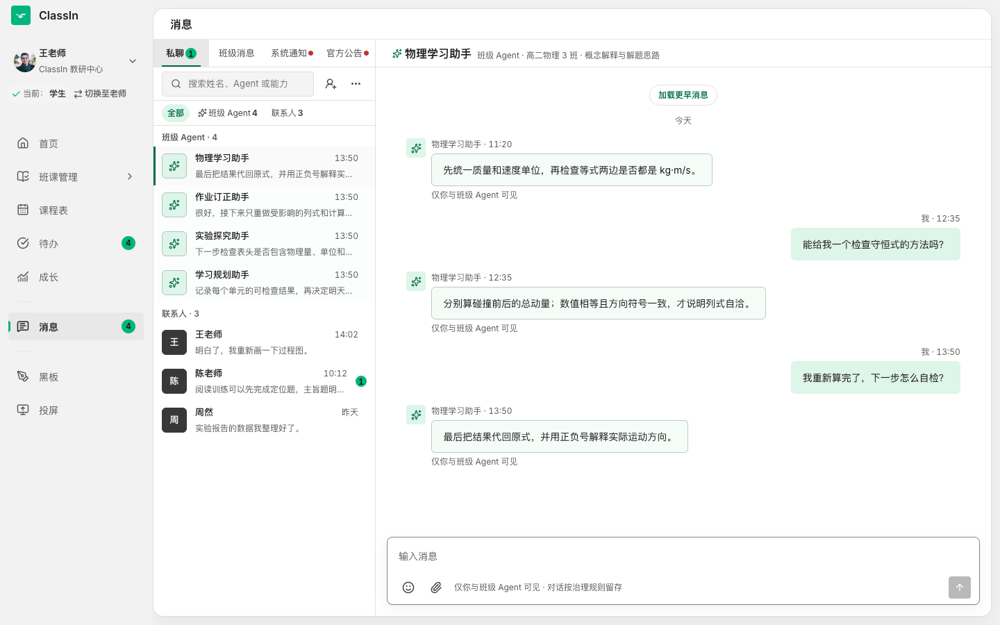
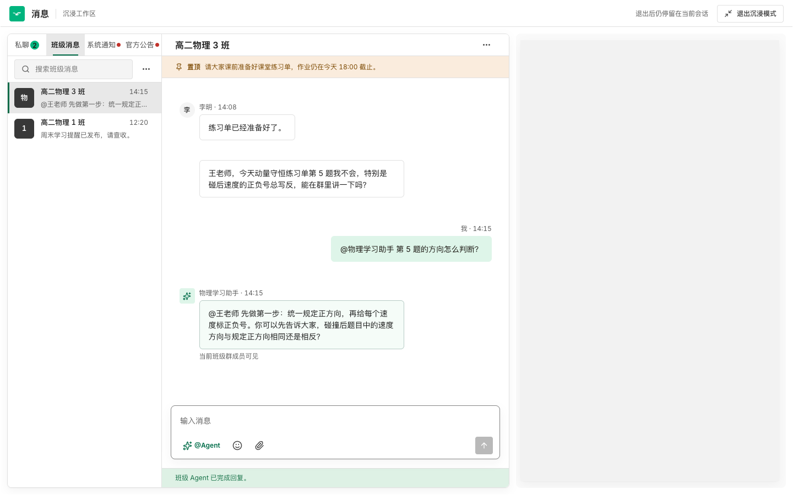
老师用 TeacherIn 完成教学任务，学生用班级 Agent 获得辅导
老师
我的教学伴侣告诉 TeacherIn 想完成什么 → 检查结果 → 修改内容 → 确认发送或写入。
学生
班级 Agent私聊里连续追问、查看历史；班级群里明确 @Agent，获得全班可见的短回答。
老师先核对事实和话术，再把作业提醒发到班级群
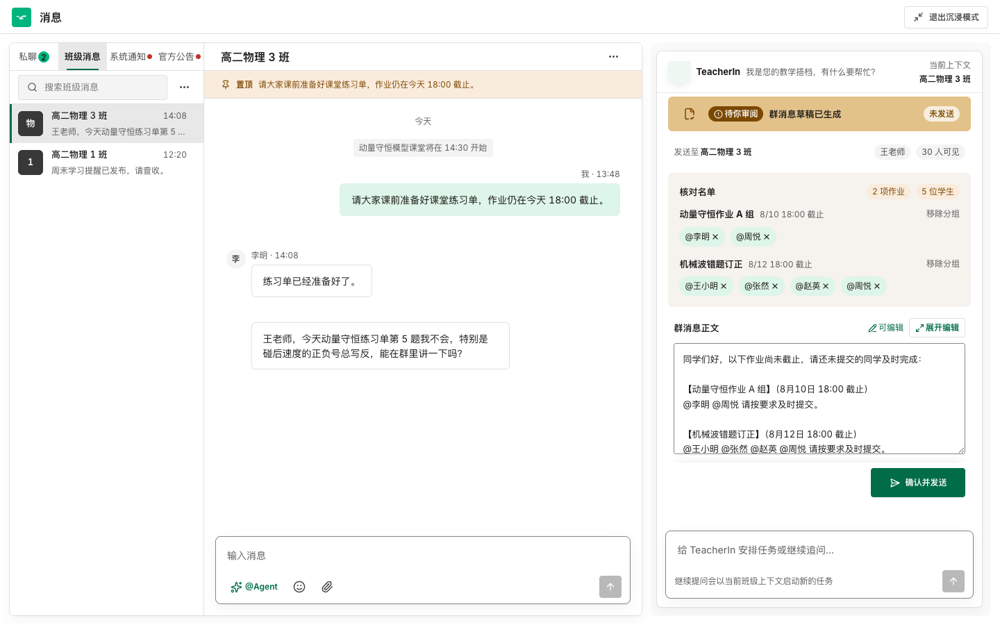
TeacherIn 根据班级作业数据列出未交名单、截止时间和发送范围。
老师看到的交付物就是即将发送的群消息，可继续编辑、移除分组或补充要求。
系统不会自动群发；确认发送后形成可追溯的执行回执。
学生找到本班学习 Agent，在私聊会话里连续获得辅导
学生从私聊目录快速定位本班可用的学习助手，Agent 身份与普通联系人清晰区分。
历史消息完整保留，Agent 基于前文逐步提示方法、自检步骤和下一步思路。
内容仅学生与该 Agent 可见；允许持续追问，但不直接给出作业最终答案。
从高保真 Demo，
走向真实业务交付
保留已经验证的产品骨架，逐步替换真实 Context、Runtime 与业务 Adapter。
不是重做页面，而是把真实能力接入已经验证的骨架
产品与教学体验
锁定 MVP 场景、成功标准、老师控制点和运营指标。
IM 与业务工程
消息、班级、课程、作业和内容对象的真实读写 Adapter。
Agent Harness
真实 Runtime、Context Engine、模型网关、恢复与成本治理。
Skills / MCP 资产
教育方法、结构化输入输出、规则校验和可复用工具。
质量与安全
权限、租户隔离、审计、评价、E2E、灰度与可观测性。
请确认三件事，让项目从 Demo 进入实施准备
独立教师产品继续作为获客实验轨道；在真实市场验证前，不提前承诺生产支付与商业化系统。